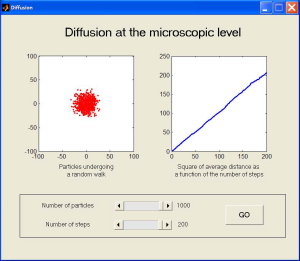
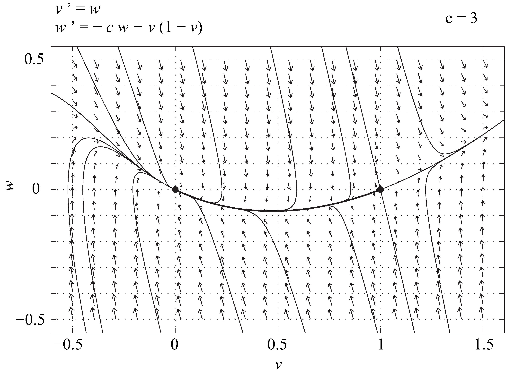

$latex \displaystyle N_i = \iiint_\Omega F(x,y,z,t)\ dV,$
di mana $latex d V$ menyatakan elemen volume di dalam $latex \Omega$. Mari kita hitung turunan $latex N_i$ terhadap waktu. Kita akan mengasumsikan bahwa $latex F$ cukup teratur untuk memungkinkan pertukaran urutan operasi turunan dan integral. Dengan demikian,$latex \displaystyle \frac{d N_i}{d t} = \frac{d}{d t} \iiint_\Omega F(x,y,z,t)\ dV = \iiint_\Omega \frac{\partial F}{\partial t}\ dV. \qquad (9.1)$
Di sisi lain, perubahan $latex N_i$ harus mencerminkan perubahan lokal pada $latex F$, serta transpor melalui batas $latex \partial \Omega$ dari $latex \Omega$. Dengan demikian, kita memiliki$latex \displaystyle \frac{d N_i}{d t} = \iiint_\Omega R(x,y,z,t,F)\ dV - \iint_{\partial \Omega} \vec \jmath (\vec r) \cdot \vec n \ dS, \qquad (9.2)$
di mana $latex R$ adalah suku reaksi yang mendeskripsikan perubahan lokal pada $latex F$, $latex \vec r$ adalah vektor posisi, $latex \vec n$ adalah vektor normal pada $latex \partial \Omega$ yang mengarah ke luar, $latex dS$ adalah elemen permukaan pada $latex \partial \Omega$, dan $latex \vec \jmath$ adalah vektor rapat fluks individu dalam neraca $latex N_i$. Suku terakhir dalam (9.2) adalah negatif dari fluks $latex \vec \jmath$ melalui batas $latex \Omega$. Tanda negatif muncul karena $latex \vec n$ mengarah ke luar dan individu yang meninggalkan $latex \Omega$ menyebabkan $latex N_i$ berkurang. Dengan teorema divergensi (sekali lagi, secara tersirat kita mengasumsikan semua besaran cukup teratur), suku ini dapat ditulis ulang sebagai$latex \displaystyle - \iint_{\partial \Omega} \vec \jmath(\vec r) \cdot \vec n \ dS = - \iiint_\Omega \vec \nabla \cdot \vec \jmath\ dV,$
sehingga$latex \displaystyle \frac{d N_i}{d t} = \iiint_\Omega \left[R(x,y,z,t,F) - \vec \nabla \cdot \vec \jmath \right] \ dV. \qquad (9.3)$
Dengan menggabungkan Persamaan (9.1) dan (9.3), kita memperoleh$latex \displaystyle 0 = \iiint_\Omega \left[-\frac{\partial F}{\partial t} + R(x,y,z,t,F) - \vec \nabla \cdot \vec \jmath \right] \ dV.$
Karena kesamaan ini berlaku untuk sembarang daerah tertutup $latex \Omega$, kita memperoleh persamaan kontinuitas berikut$latex \displaystyle \frac{\partial F}{\partial t} = R(x,y,z,t,F) - \vec \nabla \cdot \vec \jmath, \qquad (9.4)$
yang merupakan hukum neraca lokal bagi $latex F$; persamaan ini menjadi hukum konservasi ketika suku sumber bersihnya lenyap. Selanjutnya, kita perlu menghubungkan $latex \vec \jmath$ dengan $latex F$. Sebagai pendekatan pertama, kita akan mengasumsikan bahwa hukum Fick berlaku, yaitu bahwa $latex \vec \jmath$ hanya bergantung pada gradien $latex F$,$latex \vec \jmath = - D \, \vec \nabla F,$
di mana tensor difusi $latex D$ adalah matriks koefisien difusi. Entri-entri $latex D$ dapat bergantung pada $latex F$; dalam hal ini, kita memiliki difusi nonlinear. Bergantung pada sifat-sifat medium, $latex D$ mungkin tidak diagonal atau bahkan tidak isotropik. Dalam pembahasan selanjutnya, kita membuat asumsi penyederhanaan bahwa $latex D = D_0 I_3$, dengan $latex I_3$ sebagai matriks identitas $latex 3 \times 3$ dan $latex D_0$ sebagai konstanta. Dengan demikian, $latex \vec \jmath$ sebanding dengan gradien $latex F$,$latex \vec \jmath = - D_0 \vec \nabla F. \qquad (9.5)$
Di sini $latex D_0$ bernilai positif, yang mendeskripsikan fakta bahwa $latex F$ “bergerak menjauhi” daerah berkonsentrasi tinggi menuju daerah berkonsentrasi rendah. Dengan menggabungkan (9.4) dan (9.5), kita memperoleh persamaan reaksi-difusi berikut,$latex \displaystyle \frac{\partial F}{\partial t} = R(x,y,z,t,F) + D_0 \Delta F, \qquad (9.6)$
di mana $latex \Delta = {\vec \nabla}^2$ menyatakan operator Laplace. Jika $latex F$ dan $latex R$ seragam dalam ruang, yaitu $latex F(x,y,z,t) = G(t)$ dan $latex R(x,y,z,t,F) = H(t,G)$, maka Persamaan (9.6) tereduksi menjadi persamaan diferensial biasa,$latex \displaystyle \frac{d G}{d t} = H(t,G),$
di mana $latex H$ dapat berupa, misalnya, model logistik $latex H(t,G) = G (1 - G)$. Dengan demikian, kita dapat memperluas semua model yang telah dibahas dengan mengubah sistem persamaan diferensial biasa menjadi sistem persamaan diferensial parsial, disertai suku difusi yang sesuai.$latex \displaystyle \frac{\partial F}{\partial t} = D_0 \Delta F. \qquad (9.7)$
Persamaan ini linear dalam $latex F$. Jika syarat awal dan syarat batas yang sesuai diberikan, solusi tunggal dapat ditemukan dalam bentuk fungsi Green. Pada domain tak hingga, misalnya, solusi (9.7) dengan syarat awal $latex F(x,y,z,0) = H(x,y,z)$ adalah$latex \displaystyle \begin{align*} F(x,y,z,t) = & \left(\frac{1}{4 \pi D_0 t}\right)^{3/2} \\ & \int_{-\infty}^\infty \int_{-\infty}^\infty \int_{-\infty}^\infty \exp\left[- \frac{|\vec r - \vec \mu|^2}{4 D_0 t}\right] H(\xi,\zeta,\eta)\, d \xi\, d \zeta \, d \eta,\end{align*}$
di mana $latex \vec \mu=(\xi,\zeta,\eta)$ dan$latex |\vec r - \vec \mu|^2 = (x-\xi)^2 + (y - \zeta)^2 + (z - \eta)^2.$
Dari sudut pandang analisis dimensi, kita mengetahui bahwa$latex \left[ D_0 \right] = \frac{L^2}{T}.$
Akibatnya, kuadrat skala panjang karakteristik pada masalah ini diperkirakan sebanding dengan skala waktu karakteristik.$latex \langle L^2 \rangle = N l^2.$
Untuk melihatnya, nyatakan $latex \vec r_i$ sebagai vektor posisi partikel setelah $latex i$ langkah. Demi kesederhanaan, anggap partikel memulai gerak acaknya dari titik asal. Karena setiap langkah panjangnya $latex l$,$latex |\vec r_1|^2 = l^2, \qquad \hbox{dan} \qquad \langle |\vec r_1|^2 \rangle = l^2,$
di mana rata-rata $latex \langle \cdot \rangle$ dihitung atas semua kemungkinan realisasi langkah pertama partikel. Akan kita buktikan dengan induksi bahwa setelah $latex k$ langkah, dengan $latex k \in \mathbb{N}$, berlaku$latex \langle |\vec r_k|^2 \rangle = k\, l^2.$
Kita mengetahui bahwa pernyataan ini benar untuk $latex k = 1$. Sekarang akan kita tunjukkan bahwa jika pernyataan tersebut benar untuk $latex k = n$, pernyataan itu juga benar untuk $latex k = n+1$. Jadi, kita mengasumsikan bahwa$latex \langle |\vec r_n|^2 \rangle = n\, l^2,$
dan menghitung $latex \langle|\vec r_{n+1}|^2\rangle$. Kita mempunyai$latex \begin{array}{l}|\vec r_{n+1}|^2 &= |[\vec r_n + (\vec r_{n+1}-\vec r_n)]|^2 \\ &= |\vec r_n|^2 + 2 \vec r_n \cdot (\vec r_{n+1}-\vec r_n) + |(\vec r_{n+1}-\vec r_n)|^2.\end{array}$
Namun,$latex \vec r_{n+1} - \vec r_n = l\, [\cos(\theta_{n+1}) \vec \imath + \sin(\theta_{n+1}) \vec \jmath],$
di mana $latex (\vec \imath, \vec \jmath)$ merupakan basis ortonormal bidang, sedangkan sudut $latex \theta_{n+1}$ berdistribusi seragam dan independen dari riwayat gerak acak sebelumnya. Oleh karena itu, dengan mengondisikan pada posisi partikel saat ini,$latex \begin{array}{ll} \left\langle \vec r_n \cdot (\vec r_{n+1}-\vec r_n) \mid \vec r_n \right\rangle &= l\, (\vec r_n \cdot \vec \imath) \langle \cos(\theta_{n+1}) \rangle + l\, (\vec r_n \cdot \vec \jmath) \langle \sin(\theta_{n+1}) \rangle \\ &= 0, \end{array}$
Dengan mengambil ekspektasi total, suku silang tersebut tetap bernilai nol, sedangkan $latex |(\vec r_{n+1}-\vec r_n)|^2 = l^2$. Dengan demikian,$latex \langle |\vec r_{n+1}|^2 \rangle = \langle |\vec r_n|^2 \rangle + 0 + l^2 = (n+1)\, l^2.$
Oleh karena itu, $latex \langle |\vec r_k|^2 \rangle = k\, l^2$ untuk setiap bilangan bulat positif $latex k$. Jadi, $latex \langle L^2 \rangle = N l^2$ dan karena $latex T = N \delta t$, diperoleh $latex \langle L^2 \rangle \propto T$. Perhatikan eksperimen berikut. Banyak partikel yang tidak saling berinteraksi dilepaskan secara serentak dari titik asal, dan setiap partikel melakukan gerak acak isotropik di bidang. Perhitungan di atas menunjukkan bahwa setelah selang waktu $latex T$, kita mengharapkan terbentuknya awan partikel; jika jarak $latex L$ antara setiap partikel dan titik asal diukur, seharusnya diperoleh $latex \langle L^2 \rangle \propto T.$ [caption id="attachment_209" align="alignleft" width="300"]
Gambar 9.1. Antarmuka pengguna grafis yang menampilkan (kiri) awan partikel setelah dua ratus langkah dan (kanan) hubungan linear antara ⟨ L2 ⟩ dan N. [Deskripsi Gambar][/caption]Untuk memberikan gambaran visual tentang hasil ini, antarmuka pengguna grafis MATLAB Diffusion (lihat Gambar 9.1) menyimulasikan gerak acak $latex M$ partikel yang tidak saling berinteraksi pada suatu kisi—setiap partikel hanya dapat bergerak ke atas, ke bawah, ke kiri, atau ke kanan dengan peluang yang sama. Semua partikel memulai gerak acaknya dari titik asal di pusat kotak. Untuk setiap partikel, jarak $latex L$ antara posisinya setelah $latex N$ langkah (atau secara ekuivalen setelah waktu $latex T = N \delta t$, dengan $latex \delta t$ tetap) dan titik asal diukur sebagai fungsi $latex N$. Hasilnya dirata-ratakan untuk seluruh partikel, lalu diplot. Pengguna dapat memilih jumlah langkah maksimum, $latex N_{max}$, serta jumlah partikel $latex M$. Antarmuka menampilkan posisi semua partikel seiring berjalannya waktu. Pada gambar sumber yang tersedia, semua penanda partikel yang tampak berwarna merah; tidak ada satu partikel yang ditonjolkan dengan warna lain. Pada akhir simulasi, grafik rata-rata $latex L^2$ ditampilkan sebagai fungsi $latex N$. Simulasi ini menunjukkan bahwa difusi yang dimodelkan oleh persamaan panas pada tingkat makroskopis dapat dipahami sebagai akibat gerak acak partikel-partikel yang tidak saling berinteraksi pada tingkat mikroskopis. Kedua fenomena ini memang mempunyai sifat penskalaan yang sama. Korespondensi tersebut sebenarnya dapat dirumuskan secara ketat, tetapi tidak akan kita bahas di sini. Namun, deskripsi mikroskopis difusi berguna untuk selalu diingat. Kita sering mengembangkan model makroskopis berdasarkan pemahaman tentang perilaku pada tingkat mikroskopis. Karena itu, penting untuk mengetahui dalam kondisi apa suatu fenomena tertentu dapat dimodelkan secara memadai pada tingkat makroskopis dengan suku-suku difusi.$latex \displaystyle \frac{\partial N}{\partial t} = r N \left(1 - \frac{N}{K} \right) + D \frac{\partial^2 N}{\partial X^2},$
di mana $latex r$, $latex K$, dan $latex D$ merupakan konstanta. Persamaan ini dapat dibuat tak berdimensi dengan melakukan penskalaan pada ruang, waktu, dan variabel terikat $latex N$. Untuk itu, kita definisikan$latex \displaystyle n = \frac{N}{K}, \qquad x = X \sqrt \frac{r}{D}, \qquad \tau = r\, t,$
dan diperoleh persamaan Fisher-KPP tak berdimensi,$latex \displaystyle \frac{\partial n}{\partial \tau} = n \left(1 - n \right) + \frac{\partial^2 n}{\partial x^2}. \qquad (9.8)$
Persamaan ini telah dipelajari secara luas dalam literatur[footnote]Untuk suatu tinjauan, lihat misalnya W. van Saarloos, Front propagation into unstable states, Physics Reports 386, 29-222 (2003).[/footnote], dan di bawah ini kita hanya membahas salah satu sifatnya, yakni adanya suatu keluarga solusi gelombang berjalan yang didefinisikan pada garis real. Persamaan (9.8) mempunyai dua solusi seragam dan konstan, yaitu $latex n = 0$ dan $latex n = 1$. Kita dapat mencari solusi gelombang berjalan yang menghubungkan kedua solusi tersebut. Untuk itu, kita tetapkan $latex n(x,\tau) = v (\xi)$, dengan $latex \xi = x - c \tau$ dan $latex c$ sebagai parameter laju rambat, lalu menyubstitusikannya ke dalam (9.8). Dengan menggunakan aturan rantai, diperoleh$latex \displaystyle \frac{\partial n}{\partial \tau} = - c \frac{d v}{d \xi}, \qquad \frac{\partial n}{\partial x} = \frac{d v}{d \xi},$
sehingga $latex v$ memenuhi persamaan diferensial biasa$latex \displaystyle \frac{d^2 v}{d \xi^2} + c \frac{d v}{d \xi} + v (1 - v) = 0. \qquad (9.9)$
Dinamika persamaan ini dapat dideskripsikan secara kualitatif dengan meninjau bidang fase yang bersesuaian. Misalkan $latex \frac{d v}{d \xi} = w$. Maka,$latex \displaystyle \frac{d w}{d \xi} = \frac{d^2 v}{d \xi^2} = - c w - v (1 - v),$
dan (9.9) ekuivalen dengan sistem dinamik berikut$latex \displaystyle \frac{d}{d \xi} \left(\begin{array}{c}v \\ w\end{array} \right) = \left( \begin{array}{c} w \\ - c w - v (1 - v) \end{array} \right). \qquad (9.10)$
Titik tetapnya pada bidang $latex (v,w)$ adalah $latex P_0 = (0,0)$ dan $latex P_1 = (1,0)$. Matriks Jacobi sistem ini adalah$latex J(v,w) = \left(\begin{array}{cc} 0 & 1 \\ - 1 + 2 v & - c \end{array}\right),$
dan$latex J(0,0) = \left(\begin{array}{cc} 0 & 1 \\ - 1 & - c \end{array}\right), \qquad J(1,0) = \left(\begin{array}{cc} 0 & 1 \\ 1 & - c \end{array}\right).$
Untuk $latex P_1$, $latex \det(J(P_1)) = -1$, sehingga $latex P_1$ merupakan titik pelana. Titik asal mempunyai nilai eigen $latex \lambda_1$ dan $latex \lambda_2$ dengan $latex \lambda_1 \lambda_2 = 1 > 0$ dan $latex \lambda_1 + \lambda_2 = - c$. Tanpa mengurangi keumuman, kita dapat mengasumsikan bahwa $latex c$ tidak negatif, sebab mengganti $latex c$ dengan $latex -c$ sama artinya dengan mengganti $latex \xi$ dengan $latex -\xi$ dalam Persamaan (9.9). Jika $latex c = 0$, titik asal merupakan pusat. Jika $latex c > 0$, titik asal merupakan simpul stabil atau spiral stabil. Namun, fakta bahwa $latex P_1$ merupakan pelana dan titik asal merupakan penarik lokal tidak membuktikan klaim bahwa, untuk setiap $latex c > 0$, terdapat lintasan yang menghubungkan $latex P_1$ dengan $latex P_0$. Jika lintasan global semacam itu ada dan layak secara fisik, lintasan tersebut bersesuaian dengan sebuah muka yang bergerak dengan laju $latex c$ dan menggambarkan pertumbuhan keadaan $latex n = 1$ menuju wilayah dengan $latex n = 0$. Diskriminan polinom karakteristik $latex J(P_0)$, yaitu $latex c^2 - 4$, bernilai positif untuk $latex c > 2$, nol pada nilai kritis c = 2, dan negatif di bawah nilai itu. Jadi, titik asal merupakan simpul stabil untuk $latex c > 2$, simpul stabil degenerat dengan nilai eigen ganda −1 pada nilai kritis, dan spiral stabil untuk $latex 0 < c < 2$. Analisis global menunjukkan bahwa cabang manifold tak stabil yang relevan menghasilkan muka monoton tak negatif ketika c ≥ 2, sedangkan di bawah ambang itu lintasan kandidat berosilasi di sekitar titik asal dan melintasi v = 0. Gambar 9.2 dan 9.3 memperlihatkan potret fase (9.10) masing-masing untuk $latex c = 1$ dan $latex c = 3$. Pada kedua gambar, garis penuh tebal menunjukkan lintasan kandidat yang menghubungkan $latex P_1$ dan $latex P_0$; lintasan pertama berubah tanda dan tidak layak sebagai kepadatan, sedangkan lintasan kedua memberikan muka monoton yang dapat diterima. Dengan demikian, jika $latex n$ mendeskripsikan kepadatan populasi, ambang laju yang tertulis sebagai $latex 2$ harus mencakup kesamaan: laju yang diperbolehkan ialah c ≥ 2. Meskipun terdapat seluruh keluarga muka semacam itu, laju yang dipilih oleh persamaan diferensial parsial (9.8) bergantung pada data awal. Data awal dengan ekor yang cukup curam—misalnya data yang memiliki dukungan kompak—menyeleksi laju asimtotik minimum, sedangkan ekor eksponensial yang lebih landai dapat menyeleksi laju yang lebih besar. [caption id="attachment_211" align="alignnone" width="800"] Gambar 9.2. Bidang fase sistem (9.10), dengan c = 1, yang diplot menggunakan perangkat lunak PPLANE. [Deskripsi Gambar][/caption]
[caption id="attachment_212" align="alignnone" width="800"]
Gambar 9.2. Bidang fase sistem (9.10), dengan c = 1, yang diplot menggunakan perangkat lunak PPLANE. [Deskripsi Gambar][/caption]
[caption id="attachment_212" align="alignnone" width="800"]
Gambar 9.3. Bidang fase sistem (9.10), dengan c = 3, yang diplot menggunakan perangkat lunak PPLANE. [Deskripsi Gambar][/caption]$latex \displaystyle f(x,t) = \frac{1}{2 \sqrt{\pi D_0 t}} \int_{-\infty}^\infty \exp\left[-\frac{(x-x_0)^2}{4 D_0 t}\right] H(x_0)\ dx_0.$
$latex \displaystyle \frac{\partial f}{\partial t} = D_0 \frac{\partial^2 f}{\partial x^2}.$
$latex \vec \jmath = \chi b \vec \nabla n - D \vec \nabla b,$
di mana $latex n$ adalah konsentrasi nutrien, $latex b$ adalah kepadatan bakteri, $latex D$ adalah koefisien difusi, dan $latex \chi$ adalah koefisien kemotaksis. Tuliskan model reaksi-difusi sederhana untuk $latex n$ dan $latex b$ yang memperhitungkan pergerakan bakteri, difusi nutrien, dan fakta bahwa bakteri berkembang biak dengan memakan nutrien.